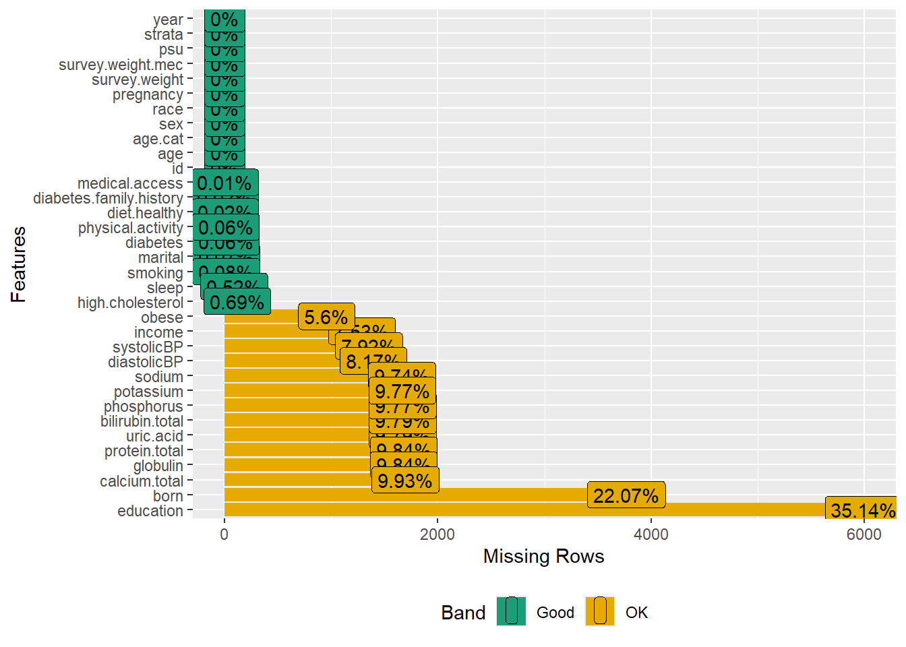

load("data/analytic13recoded.RData")
load("data/analytic15recoded.RData")
load("data/analytic17recoded.RData")34 Merge three cycles
34.1 Analytic dataset
34.1.1 Load 2013-18 datasets
34.1.2 Merge 2013-18 datasets
# adults aged 20 years or more
data.merged0 <- rbind(analytic13, analytic15, analytic17)
dim(data.merged0)
#> [1] 17057 34
data.merged <- droplevels(data.merged0)34.1.3 Check missingness
plot_missing(data.merged)
#> Warning: `aes_string()` was deprecated in ggplot2 3.0.0.
#> ℹ Please use tidy evaluation idioms with `aes()`.
#> ℹ See also `vignette("ggplot2-in-packages")` for more information.
#> ℹ The deprecated feature was likely used in the DataExplorer package.
#> Please report the issue at
#> <https://github.com/boxuancui/DataExplorer/issues>.
# profile_missing(data.merged)
dim(data.merged)
#> [1] 17057 34The data contants variables with some missing information.
data.complete <- na.omit(data.merged)
dim(data.complete)
#> [1] 6850 34- Only complete cases retained, and survey features/weights were ignored for simplicity.
- In a realistic analysis, we would consider the missingness pattern before deleting or imputing such information.
34.2 Summary statistics
| No (N=4291) |
Yes (N=2559) |
Overall (N=6850) |
|
|---|---|---|---|
| age.cat | |||
| 20-49 | 2208 (51.5%) | 1227 (47.9%) | 3435 (50.1%) |
| 50-64 | 1085 (25.3%) | 767 (30.0%) | 1852 (27.0%) |
| 65+ | 998 (23.3%) | 565 (22.1%) | 1563 (22.8%) |
| sex | |||
| Male | 2086 (48.6%) | 1106 (43.2%) | 3192 (46.6%) |
| Female | 2205 (51.4%) | 1453 (56.8%) | 3658 (53.4%) |
| education | |||
| Less than high school | 597 (13.9%) | 419 (16.4%) | 1016 (14.8%) |
| High school | 1809 (42.2%) | 1375 (53.7%) | 3184 (46.5%) |
| College graduate or above | 1885 (43.9%) | 765 (29.9%) | 2650 (38.7%) |
| race | |||
| White | 1496 (34.9%) | 932 (36.4%) | 2428 (35.4%) |
| Black | 583 (13.6%) | 581 (22.7%) | 1164 (17.0%) |
| Hispanic | 955 (22.3%) | 763 (29.8%) | 1718 (25.1%) |
| Others | 1257 (29.3%) | 283 (11.1%) | 1540 (22.5%) |
| marital | |||
| Never married | 757 (17.6%) | 408 (15.9%) | 1165 (17.0%) |
| Married/with partner | 2756 (64.2%) | 1533 (59.9%) | 4289 (62.6%) |
| Other | 778 (18.1%) | 618 (24.2%) | 1396 (20.4%) |
| income | |||
| less than $20,000 | 668 (15.6%) | 443 (17.3%) | 1111 (16.2%) |
| $20,000 to $74,999 | 1955 (45.6%) | 1353 (52.9%) | 3308 (48.3%) |
| $75,000 and Over | 1668 (38.9%) | 763 (29.8%) | 2431 (35.5%) |
| born | |||
| Born in US | 2269 (52.9%) | 1745 (68.2%) | 4014 (58.6%) |
| Other place | 2022 (47.1%) | 814 (31.8%) | 2836 (41.4%) |
| year | |||
| NHANES 2013-2014 public release | 1976 (46.0%) | 1100 (43.0%) | 3076 (44.9%) |
| NHANES 2015-2016 public release | 740 (17.2%) | 337 (13.2%) | 1077 (15.7%) |
| NHANES 2017-2018 public release | 1575 (36.7%) | 1122 (43.8%) | 2697 (39.4%) |
| diabetes.family.history | |||
| No | 3656 (85.2%) | 1971 (77.0%) | 5627 (82.1%) |
| Yes | 635 (14.8%) | 588 (23.0%) | 1223 (17.9%) |
| smoking | |||
| Never smoker | 2760 (64.3%) | 1591 (62.2%) | 4351 (63.5%) |
| Previous smoker | 917 (21.4%) | 636 (24.9%) | 1553 (22.7%) |
| Current smoker | 614 (14.3%) | 332 (13.0%) | 946 (13.8%) |
| diet.healthy | |||
| Poor or fair | 876 (20.4%) | 1006 (39.3%) | 1882 (27.5%) |
| Good | 1747 (40.7%) | 1039 (40.6%) | 2786 (40.7%) |
| Very good or excellent | 1668 (38.9%) | 514 (20.1%) | 2182 (31.9%) |
| physical.activity | |||
| No | 3590 (83.7%) | 2007 (78.4%) | 5597 (81.7%) |
| Yes | 701 (16.3%) | 552 (21.6%) | 1253 (18.3%) |
| medical.access | |||
| No | 767 (17.9%) | 319 (12.5%) | 1086 (15.9%) |
| Yes | 3524 (82.1%) | 2240 (87.5%) | 5764 (84.1%) |
| sleep | |||
| Mean (SD) | 7.32 (1.42) | 7.21 (1.54) | 7.28 (1.47) |
| Median [Min, Max] | 7.00 [2.00, 14.0] | 7.00 [2.00, 14.0] | 7.00 [2.00, 14.0] |
| systolicBP | |||
| Mean (SD) | 122 (18.2) | 127 (17.4) | 124 (18.1) |
| Median [Min, Max] | 118 [64.7, 229] | 125 [74.0, 212] | 121 [64.7, 229] |
| diastolicBP | |||
| Mean (SD) | 70.2 (11.1) | 72.8 (11.5) | 71.2 (11.3) |
| Median [Min, Max] | 70.7 [12.0, 123] | 72.7 [26.0, 124] | 71.3 [12.0, 124] |
| uric.acid | |||
| Mean (SD) | 5.19 (1.36) | 5.74 (1.48) | 5.39 (1.43) |
| Median [Min, Max] | 5.10 [1.10, 12.3] | 5.60 [2.10, 13.3] | 5.30 [1.10, 13.3] |
| protein.total | |||
| Mean (SD) | 7.14 (0.454) | 7.10 (0.443) | 7.12 (0.450) |
| Median [Min, Max] | 7.10 [4.70, 10.2] | 7.10 [5.40, 9.10] | 7.10 [4.70, 10.2] |
| bilirubin.total | |||
| Mean (SD) | 0.594 (0.307) | 0.513 (0.304) | 0.564 (0.308) |
| Median [Min, Max] | 0.500 [0, 3.30] | 0.500 [0, 7.10] | 0.500 [0, 7.10] |
| phosphorus | |||
| Mean (SD) | 3.73 (0.545) | 3.66 (0.575) | 3.70 (0.557) |
| Median [Min, Max] | 3.70 [2.00, 6.10] | 3.60 [1.80, 8.90] | 3.70 [1.80, 8.90] |
| sodium | |||
| Mean (SD) | 140 (2.45) | 140 (2.58) | 140 (2.50) |
| Median [Min, Max] | 140 [124, 150] | 140 [121, 154] | 140 [121, 154] |
| potassium | |||
| Mean (SD) | 4.01 (0.358) | 4.04 (0.363) | 4.02 (0.360) |
| Median [Min, Max] | 4.00 [2.80, 6.00] | 4.00 [2.80, 6.60] | 4.00 [2.80, 6.60] |
| globulin | |||
| Mean (SD) | 2.88 (0.438) | 3.02 (0.450) | 2.93 (0.448) |
| Median [Min, Max] | 2.80 [1.60, 6.50] | 3.00 [1.40, 5.20] | 2.90 [1.40, 6.50] |
| calcium.total | |||
| Mean (SD) | 9.39 (0.364) | 9.32 (0.381) | 9.36 (0.371) |
| Median [Min, Max] | 9.40 [6.40, 14.8] | 9.30 [6.60, 12.0] | 9.40 [6.40, 14.8] |
| high.cholesterol | |||
| No | 2833 (66.0%) | 1504 (58.8%) | 4337 (63.3%) |
| Yes | 1458 (34.0%) | 1055 (41.2%) | 2513 (36.7%) |
- Investigator specified covariates stratified by the exposure (obesity)
- This Table includes information about participants with and without ICD-10-CM proxy information. Therefore, the sample is is larger than the original analysis.
34.3 Proxy data from ICD10 codes
dat.proxy.long <- rbind(rx2013, rx2015, rx2017)
dat.proxy.long$icd10 <- NULL
# Rename 3 digits ICD-10 codes as icd10
colnames(dat.proxy.long)[names(dat.proxy.long)=="icd10.new"] <- "icd10"We combine all of the ICD-10-CM information form all 3 cycles.
34.4 Save dataset for later use
save(data.merged,
data.complete,
dat.proxy.long,
file = "data/analytic3cycles.RData")